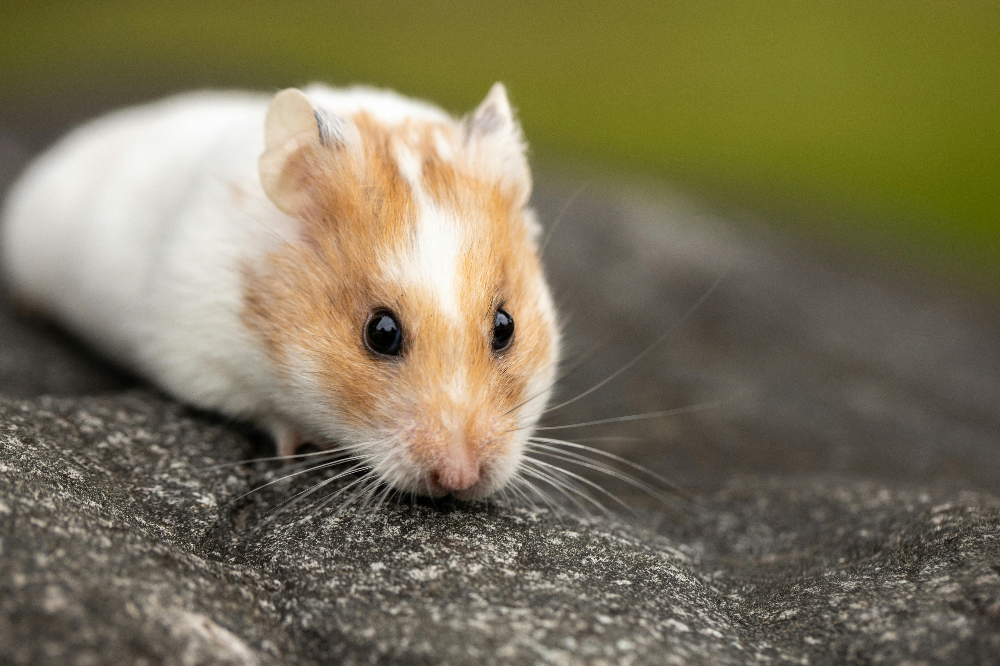

CC by
Image OwnerHamsters are rodents belonging to the subfamily Cricetinae, which contains 19 species classified in seven genera. They have become established as popular small pets. The best-known species of hamster is the golden or Syrian hamster, which is the type most commonly kept as a pet.
Syrian hamster pregnancies tend to last 16 to 17 days. You may notice a slight increase in girth or a larger abdomen in a pregnant female a few days before she gives birth.
Hamsters are rodents belonging to the subfamily Cricetinae, which contains 19 species classified in seven genera. They have become established as popular small pets. The best-known species of hamster is the golden or Syrian hamster, which is the type most commonly kept as a pet.